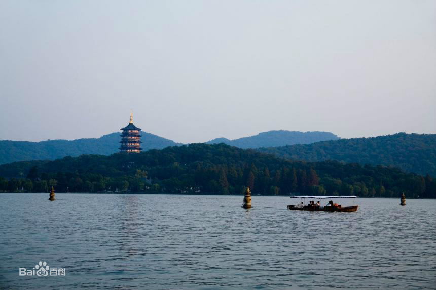

西湖

西湖，位於浙江省杭州市西湖區龍井路1號，杭州市區西部，景區總面積49平方千米，匯水面積為21.22平方千米，湖面面積為6.38平方千米。
西湖南、西、北三面環山，湖中白堤、蘇堤、楊公堤、趙公堤將湖面分割成若干水面。西湖的湖體輪廓呈近橢圓形，湖底部較為平坦，湖泊平均水深為2.27米，最深約5米，最淺不到1米。湖泊天然地表水源是金沙澗、龍泓澗、赤山澗（慧因澗）、長橋溪四條溪流。西湖地處中國東南丘陵邊緣和中亞熱帶北緣，年均太陽總輻射量在100—110千卡/平方釐米之間，日照時數1800—2100小時。
西湖有100多處公園景點，有“西湖十景”、“新西湖十景”、“三評西湖十景”之說，有60多處國家、省、市級重點文物保護單位和20多座博物館，有斷橋、雷峰塔、錢王祠、淨慈寺、蘇小小墓等景點。 [3]
2007年，杭州市西湖風景名勝區被評為“國家AAAAA級旅遊景區”。 [4] 2011年6月24日，“杭州西湖文化景觀”正式被列入《世界遺產名錄》。